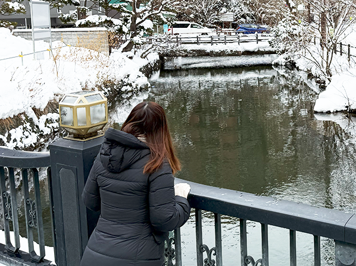

その他活動

現在、Blenderを使って3DCG制作を勉強中です。
モデリングやマテリアル設定、ライティングなど、試行錯誤しながら作品を作っています。
写真で撮る事が難しい画像を3DCGで再現し、プロモーションの為のポスターや雑誌掲載に利用しています。
まだまだ勉強中ですが、狙った通りの物が3Dで表現できるようになりたいです。
*会社製作の物は掲載不可能なので、プライベートで作った一部を載せています。
Twitch スタンプ

aaaaaaaa